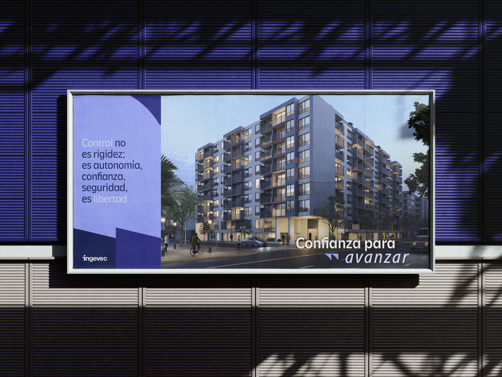
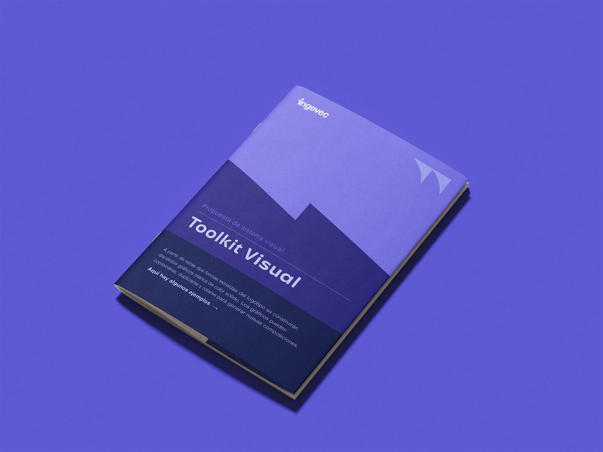
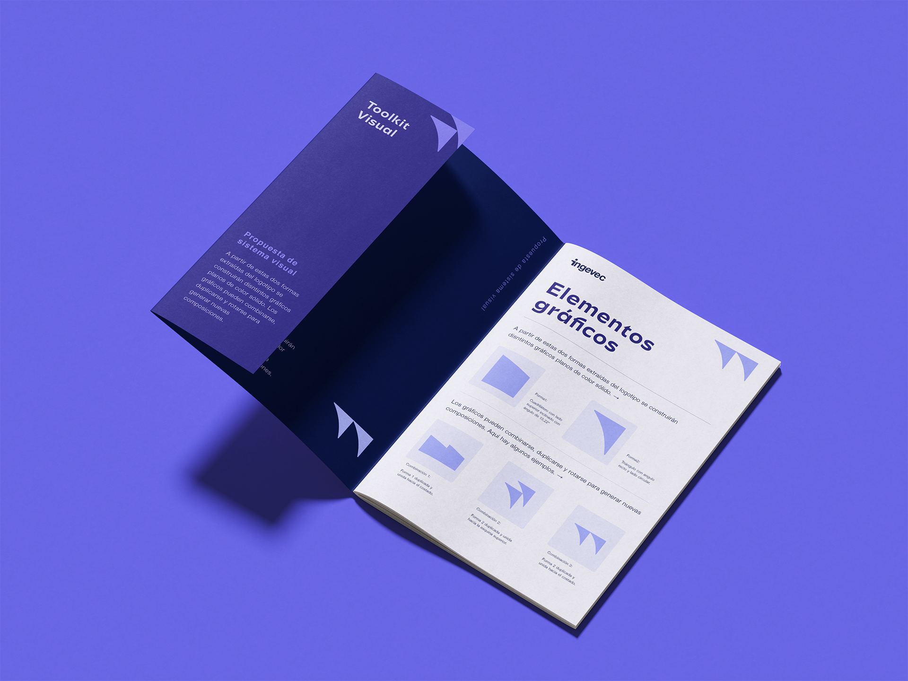
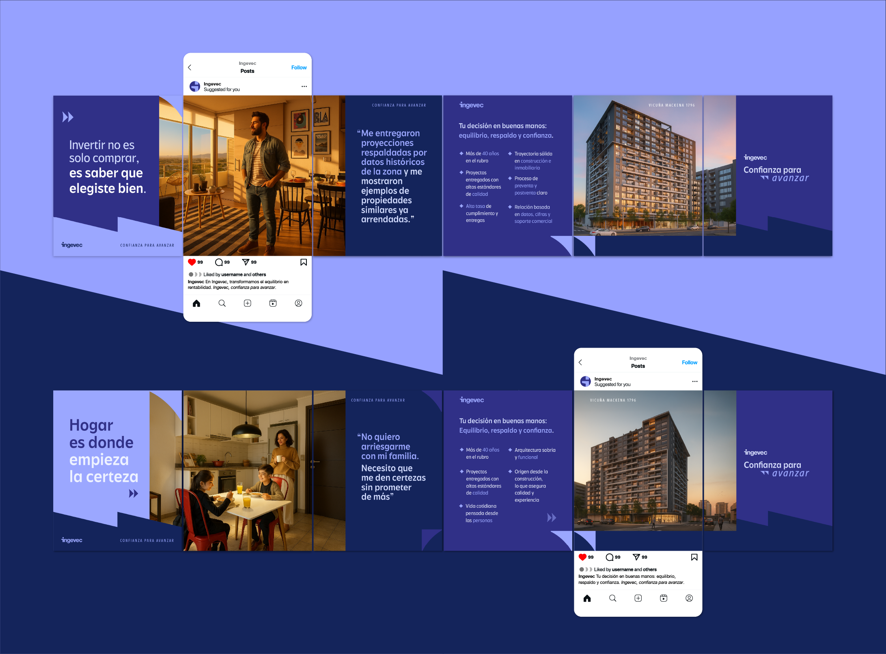

Ingevec
Branding Inmobiliario
Ingevec es una marca líder en el mercado inmobiliario y de construcción chileno, con más de 40 años desarrollando proyectos en todo el país y con un público que reconoce la marca con confianza.
Por otro lado, el desarrollo de la marca no estaba manifestando con claridad estos valores, por lo que se encargó un rediseño visual que mantuviera el logotipo.
Se creó un nuevo concepto central: Confianza para avanzar. Para desarrollarlo visualmente, creamos una herramienta transversal que entrega claridad y estructura: una grilla de seguridad flexible y adaptable.
El sistema gráfico basado en esta grilla de seguridad se complementa con elementos gráficos creados a partir de un análisis del logo, donde extraemos sus formas más pregnantes y rescatamos figuras geométricas que son un complemento visual y de marca dentro del sistema visual. Se generó además un toolkit de aplicaciones de estos elementos, para asegurar consistencia en su uso.
Sobre esta base se desarrolló una propuesta de campaña visual de introducción, que busca acercar a los diferentes públicos de la marca: "cliente habitar", "cliente inversinista", "cliente broker" y "cliente subsidio".
Se abarcaron diferentes formatos dirigidos de manera estratégica a cada cliente final de la marca. Esto abarcó piezas de redes sociales estáticas y animadas, videoa para plataformas digitales, campaña de mailing, piezas de linkedin, entre otras.



